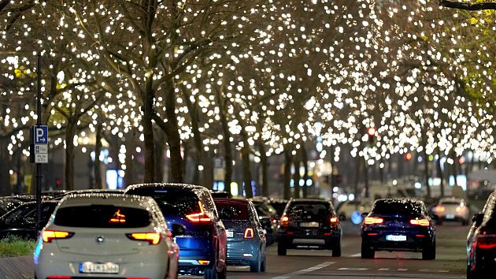

NEWS
Berlin switches on Christmas lights amid energy crisis
Berlin’s most popular shopping street switched on its Christmas lights on Tuesday, even as a deepening energy crisis in Europe threatened to derail the holiday tradition.
The German capital has been on an energy-saving mission for months, since the cost of natural gas skyrocketed in the wake of Russia’s invasion of Ukraine.
Before the war, Germany imported most of its natural gas from Russia, but Moscow turned off the tap in response to western sanctions.
Source:euronews.com